Explore a visual collection that celebrates the natural beauty, cultural heritage, local delicacies, and everyday life of Tanjung Sepat. Each photograph offers a glimpse into the hidden charm that makes this peaceful coastal town a memorable destination for visitors.
Beautiful Moments
Photography Spots
Local Food Choices
Years of Local Heritage
Browse different collections showcasing the beauty, culture, and experiences of Tanjung Sepat.
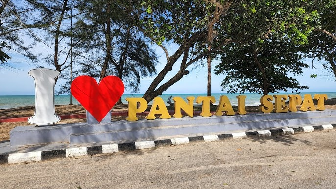
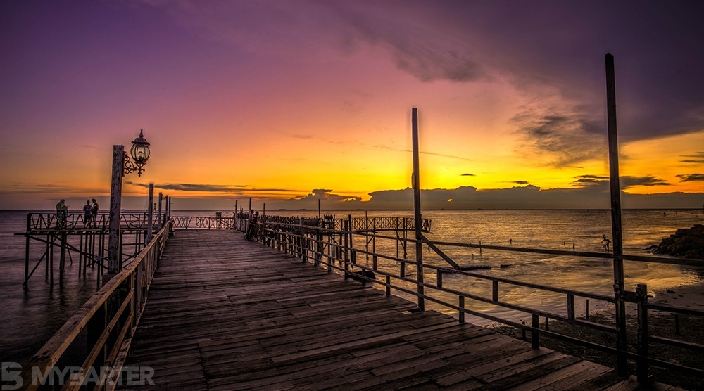
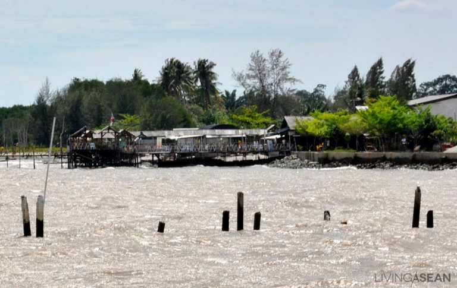
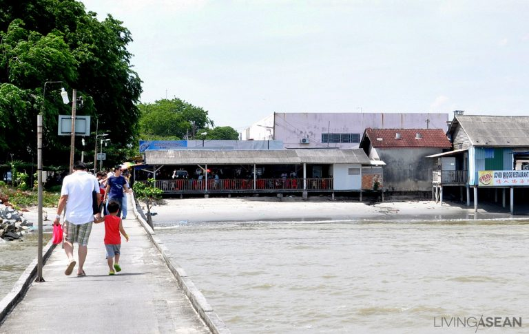
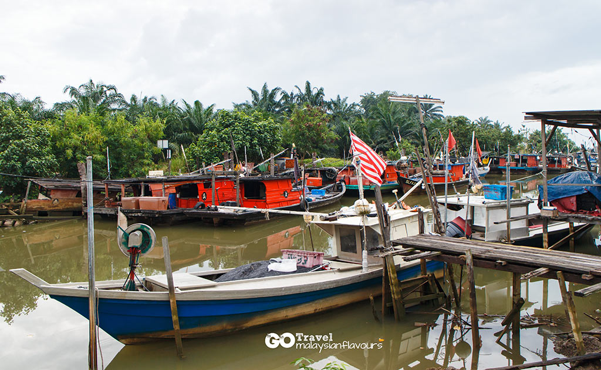
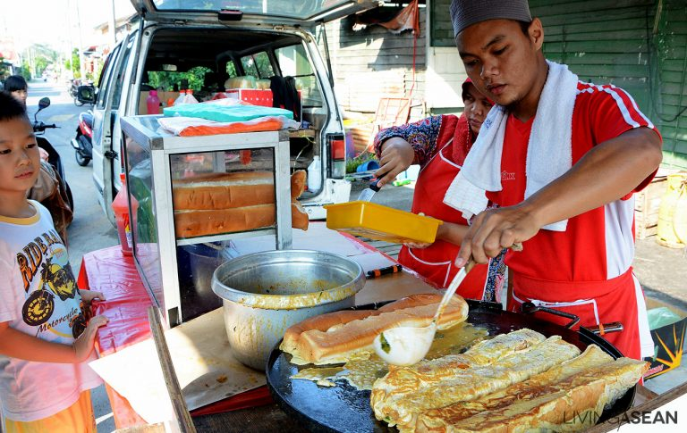
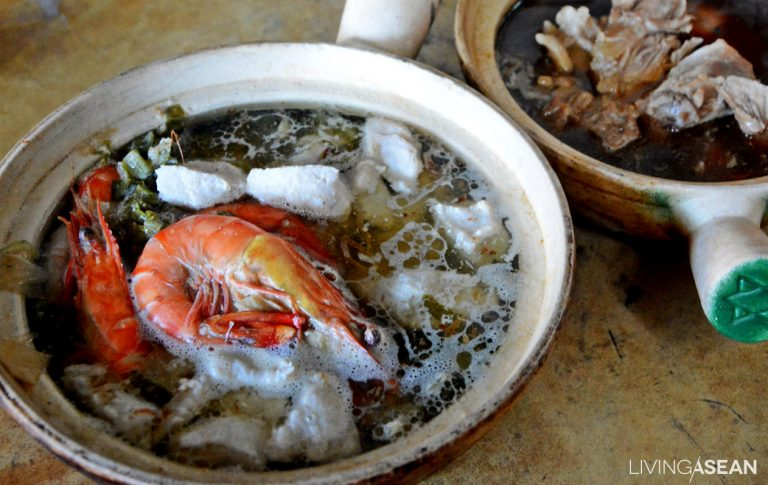
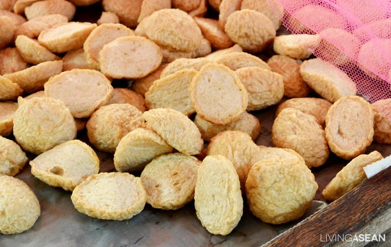
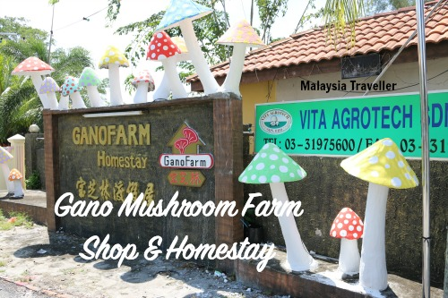
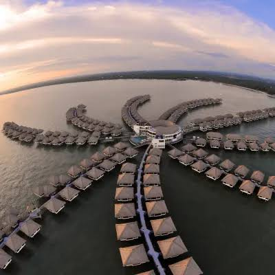
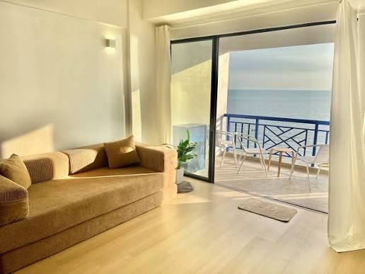
Explore our carefully selected collections highlighting the unique charm and character of Tanjung Sepat.
Discover peaceful beaches, stunning sunsets, and breathtaking coastal landscapes.
Experience traditional fishing activities, local heritage, and everyday community life.
Taste fresh seafood, famous handmade pau, Hainanese coffee, and many local delicacies.
Find comfortable accommodations that allow visitors to enjoy a relaxing coastal getaway.
Capture unforgettable memories while respecting the local environment and community.
Visit between 6:30 PM and 7:15 PM for warm sunset lighting along the beach.
The beach, fishing jetty, and village streets offer excellent photo opportunities.
Protect the environment by avoiding littering and staying on designated paths.
Ask for permission before photographing local residents to ensure a respectful visit.